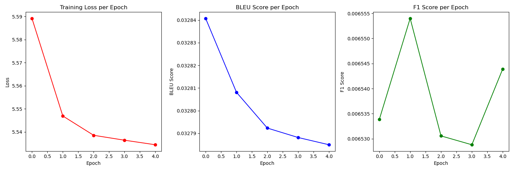

The Voice Translation System aims to bridge communication gaps by providing accurate translations of spoken language. In today’s interconnected world, voice translation systems have become essential tools for effective communication across diverse languages. Innovations from tech giants like Google with Google Translate and Meta's new Ray-Ban smart glasses highlight the growing importance of voice translation technology, making it more accessible and practical in everyday situations.
Our project aspires to design an effective and accurate translator that not only competes with these established solutions but also addresses their limitations. By leveraging advanced machine learning techniques, we will develop a robust translation system that can enhance the quality and speed of translations, making them more reliable for users in real-time communication.
Develop a robust translation system leveraging machine learning techniques.
Utilize diverse datasets for training to improve translation accuracy.
Implement user-friendly interfaces for easy interaction.
Ensure system scalability for multiple languages and dialects.
Focus on minimizing latency to facilitate real-time voice translations, catering to users in dynamic environments.
Incorporate feedback mechanisms to continuously enhance translation quality based on user interactions.
Proposal
Introduction/Background:
At the core of many modern voice translation systems is the application of advanced machine learning techniques, notably Long Short-Term Memory (LSTM) networks. Originally, Google Translate relied heavily on LSTMs as part of its neural machine translation (NMT) framework, specifically through the Google Neural Machine Translation (GNMT) model introduced in 2016 [2].
Text-to-text translation was made possible by the development of the Transformer architecture. The Transformer model eliminated the need for RNNs and instead relied solely on self-attention mechanisms and positional encoding to capture relationships between words in a sequence.
The Tatoeba English-Spanish Dataset contains over 265,817 sentence pairs, supporting multilingual NLP tasks, including machine translation, and facilitating linguistic research and model training. The English-Spanish Dataset consists of pairs of sentences in English (source language) and their corresponding translations in Spanish (target language), providing a level of linguistic variety and flexibility.
Problem Definition:
The problem we’re aiming to improve is the need for more accurate and efficient voice translations for individuals traveling or engaging in communication with people who speak different languages.
Methods:
Data Preprocessing Methods Identified:
Data Cleaning: Lowercasing all sentences, removing punctuation, eliminating duplicate sentence pairs, and rows with missing translations.
BERT: Utilizing this model allows for richer feature extraction, leading to improved translation accuracy. BERT's pre-trained language representations can be fine-tuned for specific tasks, including translation.
Contraction Integration: Expanding contractions (e.g., "don't," "isn't") to their full forms (e.g., "do not," "is not") during preprocessing, and creating a new duplicate dataset where contractions are present to improve overall translation.
ML Algorithms/Models Identified:
GRU (Gated Recurrent Unit): Combines input and forget gates into a single update gate, allowing them to efficiently capture dependencies in sequential data, making them suitable for tasks like machine translation.
LSTM (Long Short-Term Memory): A type of recurrent neural network that utilizes a complex gating mechanism to maintain context over long sequences, effectively managing the flow of information for accurate language translation.
Transformers: Leverage self-attention mechanisms to process input sequences in parallel, significantly improving training efficiency and translation accuracy compared to traditional RNN-based models.
(Potential) Results and Discussion:
Quantitative Metrics:
BLEU: A quantitative metric used to evaluate the quality of machine translation output, measuring how many words and phrases from the generated translation match reference translations. The score ranges from 0 to 1, with higher scores indicating better translation quality.
F1 Score: Combines precision and recall, providing a balanced measure of a model's accuracy, particularly useful for imbalanced datasets.
Loss: Measures the difference between the predicted output of the model and the actual output during training. Lower loss indicates good performance, while higher loss suggests the need for improvement.
Overfitting: Occurs when a model learns the training data too well, capturing noise instead of general patterns. Evaluation metrics for overfitting assess performance on unseen data versus training performance.
Token Differences and Similarities: Analyzing generated translations by comparing individual tokens (words or subwords) to see how they differ from reference translations.
Project Goals:
Improve Translation Accuracy: Achieve high-quality translations across multiple languages, measured by BLEU or TER scores.
Latency: Minimize the time taken for the translation process to ensure real-time translations for applications like voice translation.
Expected Results:
A fully working Voice Translation System from English to Spanish.
A trained text-to-text translation model with quantifiable improvements over baseline models.
Measurable improvements in translation quality using BLEU/TER scores compared to off-the-shelf translation solutions.
References:
M. H. A. R. Al-Azzeh and H. A. A. Al-Ramahi, "Voice Translation System: A Review," International Journal of Advanced Computer Science and Applications, vol. 10, no. 1, pp. 265-272, 2019. DOI: 10.14569/IJACSA.2019.0100133. Link.
Wu, Y., et al. "Google’s Neural Machine Translation System: Bridging the Gap between Human and Machine Translation." Google Research, 2016. Link.
M. G. Zeyer, J. G. von Neumann, and A. J. Spang, "Evaluating the Effectiveness of Voice Translation Systems for Communication in International Business," Journal of Language and Business, vol. 9, no. 2, pp. 1-15, 2020. Link.
Bahdanau, D., Cho, K., and Bengio, Y. "Neural Machine Translation by Jointly Learning to Align and Translate." ICLR, 2015. Link.
"Model Behind Google Translate: Seq2seq in Machine Learning." Analytics Vidhya, Feb. 2023. Link.
Here is our midterm checkpoint for our Voice-Based Language Translation System, focusing on data preprocessing, machine learning, and model training for English-Spanish translation using a Sequence-to-Sequence (Seq2Seq) model with a GRU-based encoder-decoder architecture.
Introduction/Background
The Voice Translation System aims to bridge communication gaps by providing accurate translations of spoken language. In today’s interconnected world, voice translation systems have become essential tools for effective communication across diverse languages. Innovations from tech giants like Google with Google Translate and Meta's new Ray-Ban smart glasses highlight the growing importance of voice translation technology, making it more accessible and practical in everyday situations.
Our project aspires to design an effective and accurate translator that not only competes with these established solutions but also addresses their limitations. By leveraging advanced machine learning techniques, we will develop a robust translation system that can enhance the quality and speed of translations, making them more reliable for users in real-time communication.
Problem Definition
The problem we’re aiming to improve is the need for more accurate and efficient voice translations for individuals traveling or engaging in communication with people who speak different languages.
Methods
The preprocessing of the dataset is performed using various techniques:
Lowercasing: All text is converted to lowercase to maintain consistency.
Punctuation Removal: Both English and Spanish sentences have their punctuation removed to make translation easier.
Removing Duplicates: Duplicate sentence pairs are dropped to avoid redundancy in the training data.
Handling Contractions: A contraction dictionary is applied to expand contractions in the English text, improving model accuracy by reducing variation in language forms.
dataSetCleaning(df): This function performs lowercasing, punctuation removal, and duplicate elimination.
def dataSetCleaning(df):
# Lowercasing all sentences
df['English'] = df['English'].str.lower()
df['Spanish'] = df['Spanish'].str.lower().fillna('')
# Removing Punctuation From Both Data set's so that translation will be easier
df['English'] = df['English'].str.translate(str.maketrans('', '', string.punctuation))
df['Spanish'] = df['Spanish'].str.translate(str.maketrans('', '', string.punctuation))
# Eliminating duplicate sentence pairs
df.drop_duplicates(subset=['English', 'Spanish'])
# Remove rows with missing translations.
df[df['Spanish'] != '']
return df
In order to fully expand the contraction we had a python file which held a dictionary of the major contractions and their expanded form in english
dataSetContractionIntegration(df): Expands contractions in the English sentences using a predefined contraction dictionary.
def dataSetContractionIntegration(df):
new_data = []
for _, row in df.iterrows():
words = row["English"].split()
expanded_words = [CONTRACTIONS[word.lower()] if word.lower() in CONTRACTIONS else word for word in words]
expanded_sentence = ' '.join(expanded_words)
english_sentence = {
"English": expanded_sentence,
"Spanish": row["Spanish"]
}
new_data.append(english_sentence)
dataFrame = pd.DataFrame(new_data)
return pd.concat([df, dataFrame]).drop_duplicates().reset_index(drop=True)
dataSetBertEmbeddings(text, model, tokenizer): Utilizes the BERT tokenizer and model from Hugging Face to obtain word embeddings for tokenized text.
In order to get the BERT Embeedings for the English & Spanish Sentences we used a transformer model through the Huggingface API
english_tokenizer = BertTokenizer.from_pretrained("bert-base-uncased")
english_model = BertModel.from_pretrained("bert-base-uncased")
# We Found BETO : A Spanish BERT (Tokenization)
# https://huggingface.co/dccuchile/bert-base-spanish-wwm-uncased
spanish_tokenizer = BertTokenizer.from_pretrained("dccuchile/bert-base-spanish-wwm-cased")
spanish_model = BertModel.from_pretrained("dccuchile/bert-base-spanish-wwm-cased")
# Get BERT embeddings for English
df['English BERT'] = df['English'].apply(lambda x: dataSetBertEmbeddings(x, english_model, english_tokenizer))
# Get BERT embeddings for Spanish
df['Spanish BERT'] = df['Spanish'].apply(lambda x: dataSetBertEmbeddings(x, spanish_model, spanish_tokenizer))
The translation system utilizes a custom Seq2Seq model with a GRU-based Encoder and Decoder. This architecture is commonly used for machine translation tasks due to its ability to capture long-range dependencies and generate output sequences.
Key Components:
Encoder: Encodes the input (English) sentence into a context vector.
The TranslationDataset class prepares the dataset, including tokenizing sentences and converting them into tensors for model training.
The model uses Cross-Entropy Loss for optimization, suitable for classification tasks such as predicting each token in the target sequence.
BLEU and F1 scores are computed during training as evaluation metrics for translation quality.
Results and Discussion
The training loop runs for 10 epochs, where:
The model is trained with batch-wise data using the DataLoader object.
At each epoch, the model computes the loss, BLEU score, and F1 score for the translation quality.
A checkpoint is saved after each epoch to allow model recovery if needed.

Figure 1: Plot of Training Loss, BLEU, and F1 Scores over Epochs
Loss Loss quantifies how far off the model's predictions are from the expected results.
According to the Graph above, The training loss is decreasing steadily across epochs, indicating that the model is learning and improving. This is a good sign.
However, the rate of decrease does slow down a bit It's possible that the model has reached a point of diminishing returns, where further training might not significantly improve the loss.
BLEU score: Measures the quality of the generated translations by comparing them to reference translations.
The BLEU score decreases steadily across all epochs. This suggests that the model's translation quality should be increasing. It starts at 0.03284 and ends at
0.03279. According to BLEU, 0.7 - 0.9: Good translation quality and 0.9 - 1.0: Excellent translation quality.
F1 Score: A metric for classification performance, particularly useful for evaluating precision and recall in multi-class tasks.
Our F1 score increased at the beginner reaching a value of 0.006555 it then dips downards to 0.006530. However as we reach the 5th Epoch it increases back to
0.006545. Our F1 score is increasing which means our model's perceision is increasing. According to F1, 0.7 - 0.9: Good performance and 0.9 - 1.0: Excellent performance
Next Steps
BLEU and F1 scores over epochs, showing how well the model's translation quality improves during training.
To improve our model's performance, we will begin by closely monitoring both training and validation losses to identify any overfitting or underfitting issues.
We will adjust the learning rate and experiment with different batch sizes to stabilize training.
Additionally, we will review our data preprocessing pipeline for any inconsistencies and ensure the quality of our translations.
Exploring more advanced architectures, such as the Transformer or models with attention mechanisms, could enhance translation quality. Finally, implementing early stopping and tuning hyperparameters will help us optimize the model and address the decreasing BLEU score.
References:
M. H. A. R. Al-Azzeh and H. A. A. Al-Ramahi, "Voice Translation System: A Review," International Journal of Advanced Computer Science and Applications, vol. 10, no. 1, pp. 265-272, 2019. DOI: 10.14569/IJACSA.2019.0100133. Link.
Wu, Y., et al. "Google’s Neural Machine Translation System: Bridging the Gap between Human and Machine Translation." Google Research, 2016. Link.
M. G. Zeyer, J. G. von Neumann, and A. J. Spang, "Evaluating the Effectiveness of Voice Translation Systems for Communication in International Business," Journal of Language and Business, vol. 9, no. 2, pp. 1-15, 2020. Link.
Bahdanau, D., Cho, K., and Bengio, Y. "Neural Machine Translation by Jointly Learning to Align and Translate." ICLR, 2015. Link.
"Model Behind Google Translate: Seq2seq in Machine Learning." Analytics Vidhya, Feb. 2023. Link.
Contribution Table
Team Member
Midterm Contributions
Moses Adewolu
Implemented Preprocessing methods, data cleaning, contraction integration, BERT Embedding via HuggingFace API.
Implemented GRU Model, Encoder, Decoder along with SequenceToSequence Model. Worked on Method training code along with method evaluation and results. Worked on miterm proprosal.
Christian
Helped find dataset, worked on preprocessing methods, dataSetContractionIntegration, dataCleaning. Helped with training the model
on PACE ICE.
Ethan
Helped work on midterm proposal presentation. Formatted Results, specifically BLEU, Loss, F1 Scores.
Arun
Helped work on midterm proposal presentation. Formatted Results, specifically BLEU, Loss, F1 Scores.
Gantt Chart
Final Report
This section will include your final report, summarizing the work completed, results obtained, and conclusions drawn from the project.